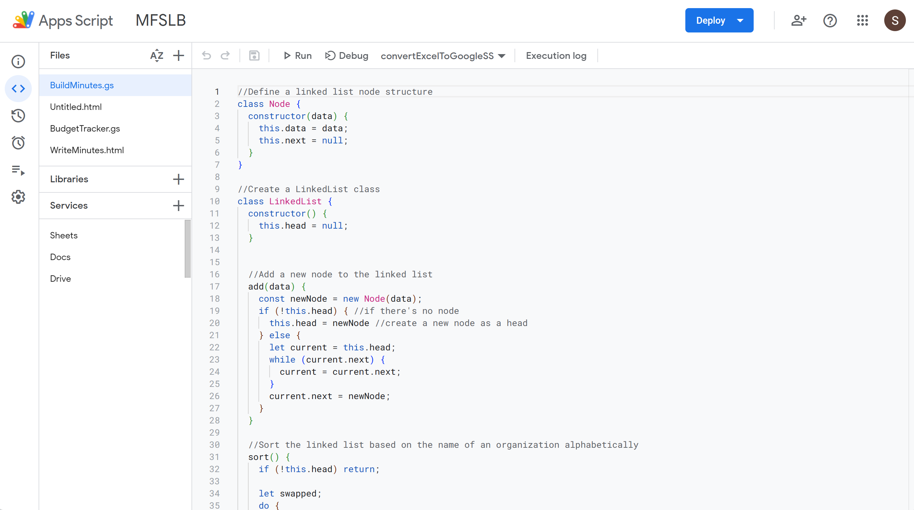

UofT Engineering Society Finance Committee
Finance Secretary
MFSLB (Make Finance Secretary Life Better)
Objective:
The goal of this project is to implement MFSLB, revolutionizing financial data management within the UofT Finance Committee. MFSLB is designed to automate the extraction of relevant data from budget application spreadsheets and efficiently embed this information into our budget tracking system and meeting records.
Technologies:
- Google App Script written in JavaScript
- Google Products & Services (i.e. Drive, Doc, Spreadsheet)
Automated Data Processing Pipeline
1. Create a linked list for essential values such as Requested amount, Total Amount, Organization name, etc.
2. Convert the budget applications from .xlsx to .gsheet format due to compatibility issues.
3. Extract relevant values from the spreadsheets.
4. Allocate the extracted values to their respective linked lists.
5. Integrate the data into both the budget tracking system and meeting minutes.
*Note: Unable to share the code publicly due to security reasons.
